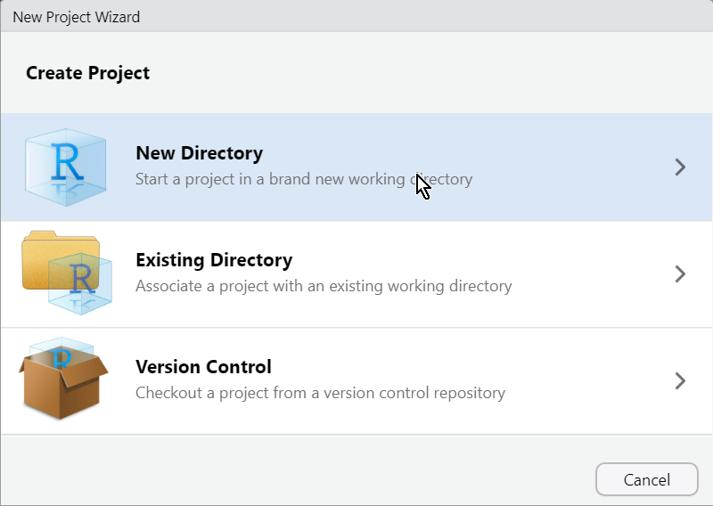
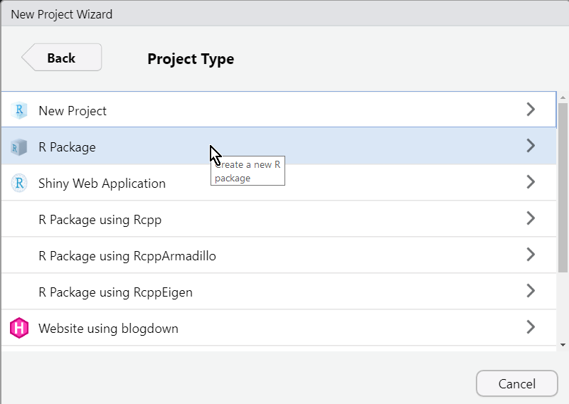
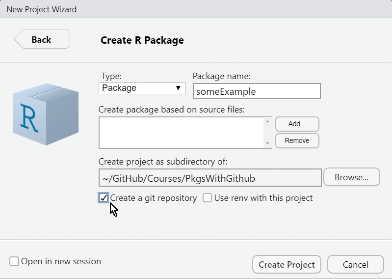

To start using RStudio for creating packages, you need to create a specific kind of project. Making this into a git repository requires a bit more work. There’s multiple ways to do this, and here you’ll find two:
The first method is easy if you use GitHub Desktop. The second method is useful if you prefer to work from github, or can’t use the Desktop app.
  
Now open GitHub Desktop to publish the repository on GitHub.
Now you’ve added the project to your Desktop app. In order to publish, you need to create an initial commit.
This pushes everything to GitHub. If you then click on “Show on Github”, it will take you to the project page on github.com.
If you followed the procedure explained in Setting up an RStudio project with git, you can still convert this project to a package. For that, you open the project in RStudio and type the following code in the console:
devtools::create(".")RStudio will complain though. It will give you the message:
New project 'PkgsWithGithub' is nested inside an existing project './', which is rarely a good idea.
If this is unexpected, the here package has a function, `here::dr_here()` that reveals why './' is regarded as a project.
Do you want to create anyway?You can safely use the option that would equate a “yes”. (You’ll find 3 options, only one being affirmative, and often in a different order). After you’ve done that, a new instance of RStudio will open with the project converted to a package.
The reason for the complaint, is the fact that you change the project type in RStudio itself. Most often you don’t want to do this, but in this case you actually do.